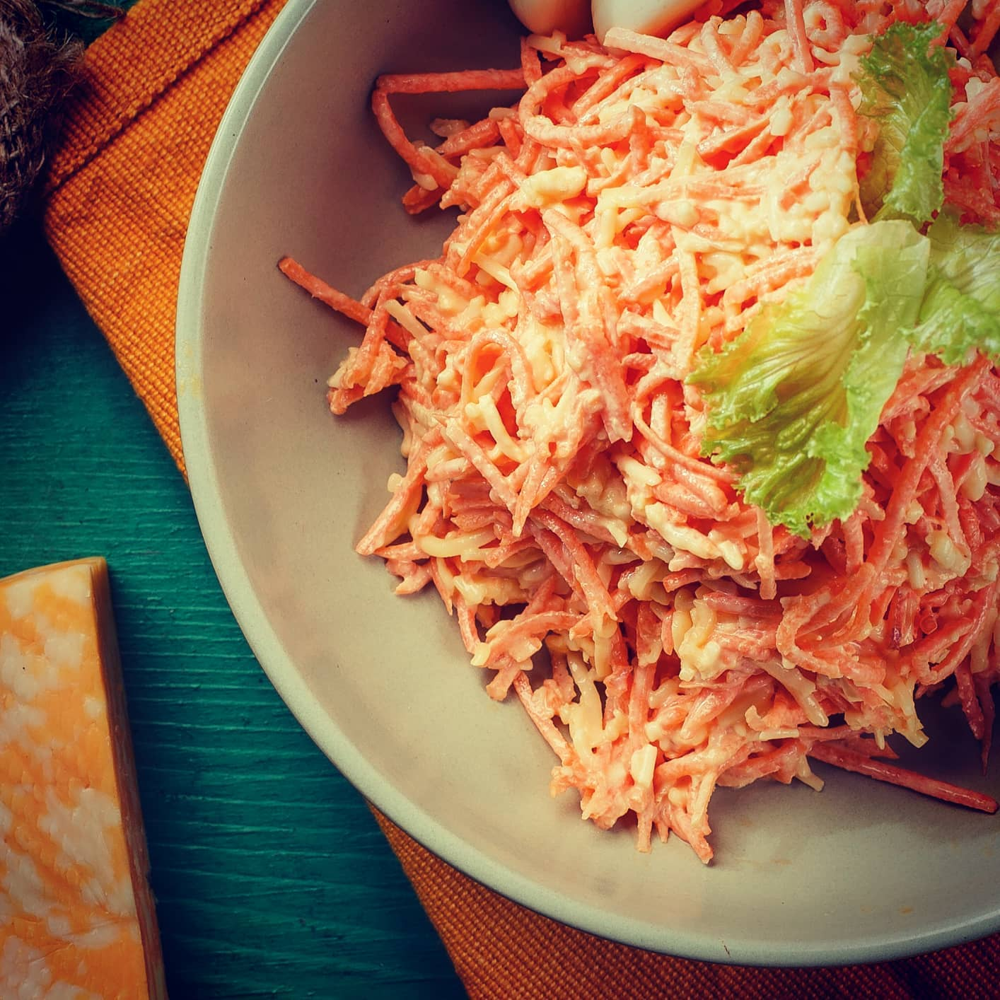

Mrkvový šalát podľa @mojakucharocka — Normy Jedál
Lahodný 𝑴𝒓𝒌𝒗𝒐𝒗𝒚́ 𝒔̌𝒂𝒍𝒂́𝒕 𝒔 𝒗𝒂𝒋𝒊́𝒄̌𝒌𝒐𝒎. Môžeme ho použiť aj ako chutnú nátierku do sendviča, či na obložené chlebíky. Alebo si ho dajte ako ľahkú večeru na opečenú hrianku. V každej variante je chutný 😉
𝑨𝒌𝒐 𝒏𝒂 𝒕𝒐 ➺ https://www.kucharocka.sk/recept/mrkvovy-salat-s-vajickom/
.
#mojakucharocka #mojerecepty #varenieapeceniejelaska #salat #mrkva #syr #mrkvovysalat #vajce